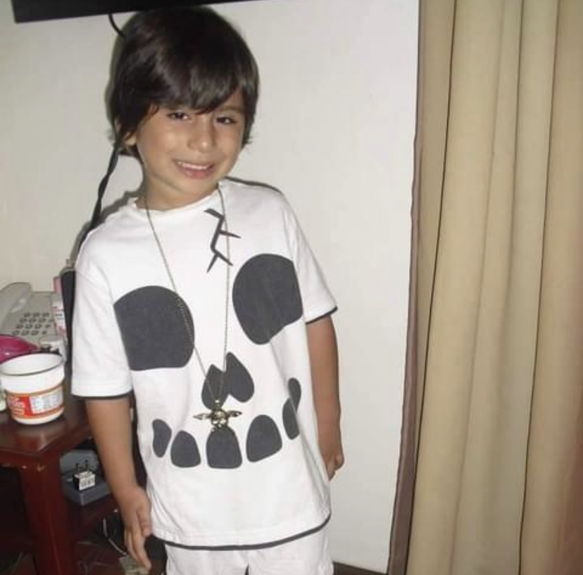
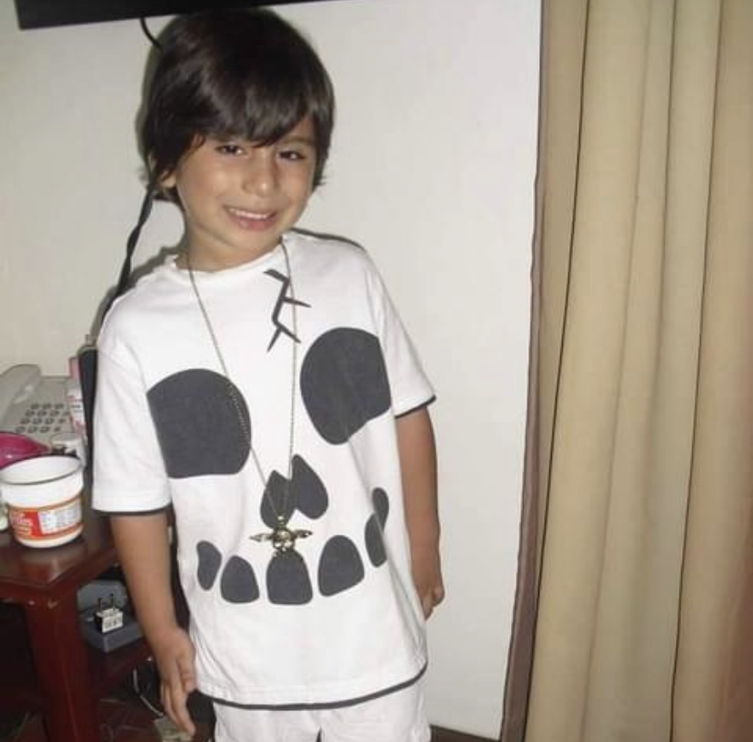

© Brands by Adrian Garcia. In Partnership with Tatiana Margaret Pandatu and Daniel Sebastian De Rosa. Fair use and all rights reserved 2023
Be sure to check our github profiles -------------------------------------------------------------------------------------------------------------------------------------------------------->